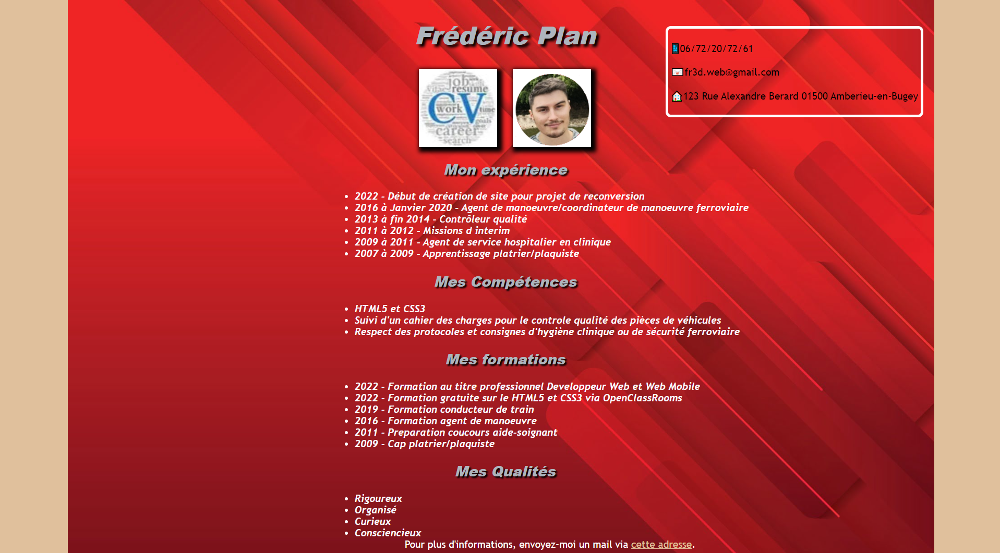
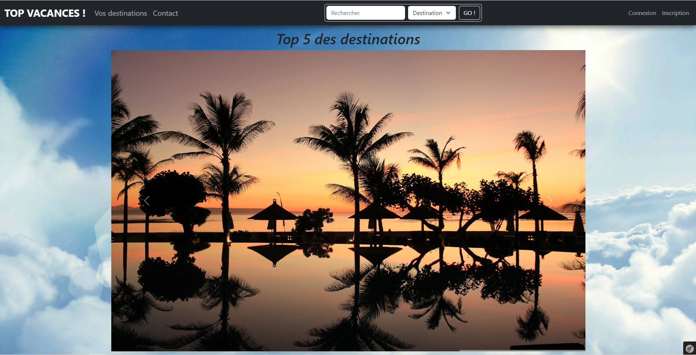

Premier site effectué avant ma formation avec OpenClassroom.

2eme projet
Cv codé en début de formation (premier projet de formation).

3eme projet
Site de notation de voyages fait en groupe en milieu de formation.
Je suis Fred, né en 1991,
j’ai eu un parcours professionel diversifié,
suite à ma décision de vouloir changer
de mon métier de conducteur de train pour des
raisons de confort de vie,
je me suis tourné à nouveau vers l’univers informatique
suite à un bilan de compétences, univers que je souhaitais
intégrer au moment de ma
première orientation.